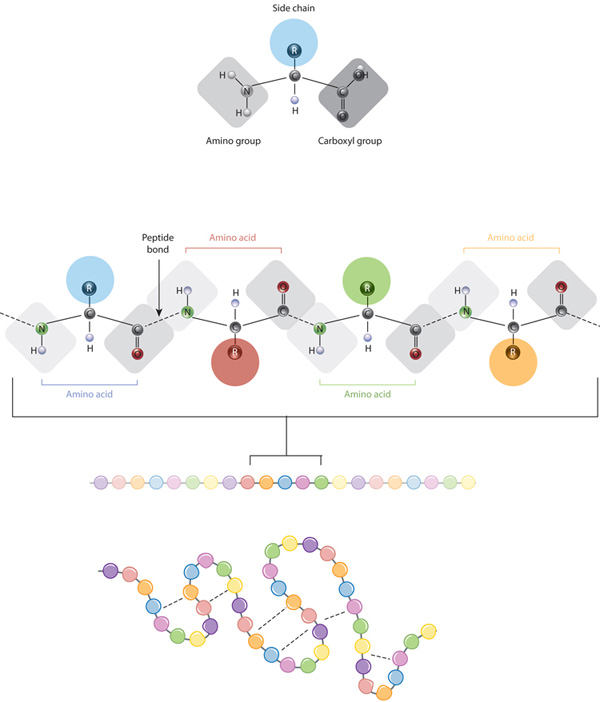
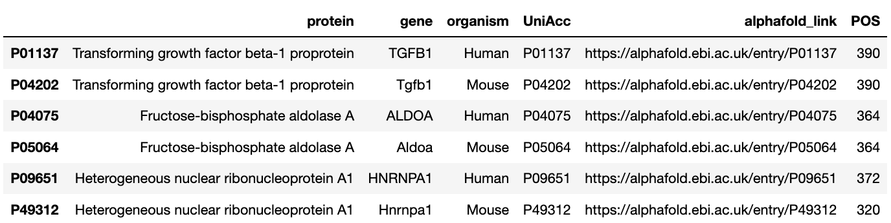
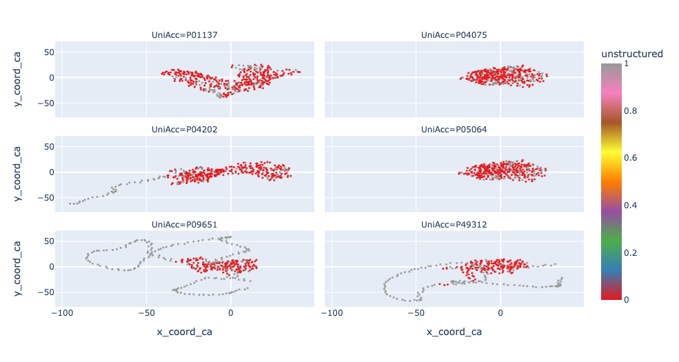

The provided data consists of protein structures and modifications for three proteins in two species (human and mouse).
This dataset has the attributes listed below. In the following we explore several exploratory questions on the dataset.
The dataset includes coordinates for the carbon and nitrogen atoms of each residue. For the former, it has the coordinates of the the alpha and beta carbons, and the carbon of the carboxyl group. The former, is the core of the so called amino group. Check this website for more information.
The locations of different atoms can be used to compute quantities like the dihedral angle, which, among other things, could be useful for visualization. Nevertheless, for now we will ignore the extra atomic-level information and instead will use the alpha carbon as the residues representative.
This interactive visualization permits exploring the structure of P01137 which is the human Transforming growth factor beta-1 protein. We connected residues through their alpha carbons and, for each alpha carbon, attached the other atoms. At some point it could be interesting to include atomic-level information for analyzing the effect of modifications. For instance, by computing dihedral angles, some measure of energetic allowance could be computed. Perhaps, areas with higher cumulative energetic allowance are more prone to pathogenic mutations.
Not exactly. As the table below shows, the HNRNPA1 gene of mouse and human do not match in length.
Inspecting the protein structures closer, the 3D configuration is similar but not the same, which should be considered when performing analysis across species. Perhaps, by aligning the structures their similarity would become apparent. For not, there is no clear use case for said alignment so we will skip it.
If the residue does not belong to the BEND, HELX, STRN or TURN categories then it is classified as unstructured. Therefore, it is a expanded/one hot version of the structure_group field. The graphic below shows the structured and unstructured regions for the different proteins. Note how outer areas like those ocurring in P09651 and P49312 tend to be unstructured.
We compute two types of distances. First, those between adjacent residues. Second, those between nearest neighbors. In both cases we use alpha carbons.
According to AlphaFold's website, quality above 70 is acceptable and below 50 could indicate disorder. The histograms below show the distribution of quality scores among organisms (human vs mouse) and genes. In general, most predictions have a score above 70, making them suitable for analysis. Interestingly, for P09651 and P49312, the human and mouse genes for the Heterogeneous nuclear ribonucleoprotein A1, the model exhibits a larger degree of uncertainty in the predictions.
Click on this link to access the interactive visualization we used for the following analysis.